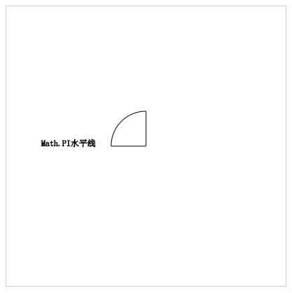
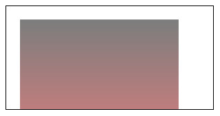

Cavans
简介
H5提供的一个新的标签元素：中文翻译 画布
Canvas是指 可以在其上面通过脚本语言（通常是js）绘制图形、图像以及制作动画的标签。
- Canvas本身不具备绘制能力，只是负责展示
- 在浏览器不支持Canvas时 会将其当作div解析
在IE低版本中会将其当作文本节点来解析
基本使用
创建一个画布
|
|
- 在创建一个canvas标签时，如果没有指定宽高，默认为 300 * 150（px）
- 用行内样式指定canvas的宽和高；如果在非行内样式指定canvas的宽和高，会在默认值的基础上缩放，而在缩放时，并没有在canvas像素点的个数
获取绘制工具
|
|
getContext方法：参数为‘2d’or‘webGL’
2d：获取绘制平面图形的工具
webGL：绘制立体图形的工具
绘制工具有归属的，只有画布自己的绘制工具可以在本身上绘制图形、图像。
坐标系
- 原点 在canvas的左上角
- 在原点的水平方向为 X 轴
- 在原点的垂直方向为 Y 轴
绘制工具的API方法
- 移动笔触
moveTo(x,y)x 确定点的横坐标 y 确定点的纵坐标 - 画线
lineTo(x,y)从当前笔触所在点连线到指定点
- 移动笔触
绘制直线步骤
- 移动笔触
moveTo - 画线
lineTo - 描边
stroke或 填充fill
- 移动笔触
|
|
- 绘制矩形笨拙
|
|
- 绘制矩形便捷
方法一：填充
|
|
方法二：描边
|
|
- 绘制圆弧
|
|
- 绘制扇形
- 利用自动笔触连接功能完成扇形。
- 先确定圆心位置
- 画弧度
- closePath
- 利用自动笔触连接功能完成扇形。
|
|

- 绘制钩子
|
|

弧度制
|度数 | 换算|
|———-|——–|
|360°| 表示 一圈|
|2Math.PI | 一圈|
|360 = 2Math.PI| |
|一弧度 |Math.PI /180|
|一度 |180/Manth.PI |
arcTo 方法
1234ctx.arcTo(x1,y1,x2,y2,RADIUS)//moveTo(x,y)//arcTo()//绘制文本
CanvasRenderingContext2D.strokeText( text, x, y[, maxWidth] )CanvasRenderingContext2D.fillText( text, x, y[, maxWidth] )
描述:
1.这两个方法的功能都是在给定的 x, y 坐标下绘制文本内容.
2.stroke 绘制描边文字, 文字内空心. fill 绘制填充文字, 即实心文字.
3.最后一个参数可选, 用于限制文字的总宽. 特殊条件下, 系统会自动调整文字宽度与大小以适应该参数限制。
//middle适用于中国。
圆角按钮小制作
思路：确定圆角按钮尺寸，和arcTo方法中的(x1,y1,x2,y2)对照。


|
|
路径的概念
- ctx.beginPath();//开辟新路径 避免出现覆盖式的填充
- ctx.closePath();//闭合路径
- 将图形的起始点与终止点进行连线 形成封闭的图形
- 会自动处理封闭图形的锯齿
- 如果使用手动封闭会出现锯齿缺口
注意： 只有在需要开始新路径是，调用beginPath；在需要将图形闭合，形成封闭的图形，那么就可以调用closePath方法。（折线图不需要）
stroke-或fill-开头的方法，都会绘制路径，除此之外都需要手动调用stroke或fill。
线性相关的属性
lineWidth 设置线宽
strokeStyle 设置线条颜色，值为16进制、颜色字符串、rgb、rgba、渐变色
fillStyle 设置填充颜色
lineCap 设置线段两端的样式
- ‘butt’ 默认值 无样式
- ‘round’ 设置圆角
- ‘square’ 设置方形
|
|
如图：

- lineJoin 设置线段相交点的样式
- ‘round’ 圆角
- ‘bevel’ 平角
- ‘miter’ 尖角
非零环绕原则
- 目的：确定某一区域是否需要填充。
描述：
定义计数默认为0，从当前区域选取任意点，然后从该点到整个图形外部绘制一条射线。
观察和这条射线相交的所有线段。如果相交的线段是顺时针穿过这条射线，那么此时的标量 +1 ，如果是逆时针穿过，计数 -1；如果计数为 0 ，那么不填充该区域。
|
|
如图：
奇偶原则
- 目的：确定某一区域是否填充
- 描述：相交线的个数，为奇数填充；否则就不填充。
纵向颜色渐变
|
|
如图：

绘制坐标轴和折线
|
|
如图：
绘制网格
|
|
如图：